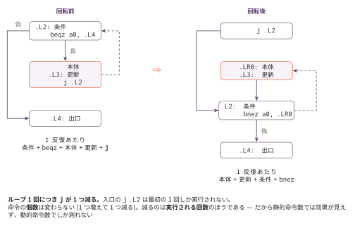

ブロック整列とループ回転 — 命令を減らさずに速くする
今日のゴール
ループが毎回実行している「条件へ戻るジャンプ」を消す。 命令の個数は変わらないのに実行回数が減る、という最適化を体験する。
この回の位置づけ
| 項目 | 内容 |
|---|---|
| 必須の前提 | O1（測定基盤。動的命令数の物差しが要る）、O2（loop_headers が cfg.py の後方辺を使う） |
| 推奨の前提 | O3（命令選択）。実質必須に近い。「動かし方」も「測ってみると」も --passes isel,layout を O1 の全構成の基準表の +isel 列と比べるので、O3 が無いと基準がそろわない |
| 改変しない | mycc.py、scaffold/、optcc.py |
| 編集する | layout.py |
| 完了条件 | check.py の全 Step が PASS になり、golden.py が fixed17 全通と動的命令数の削減を報告する |
| コマ数 | 1 |
| 備考 | 最適化発展シリーズの第7回。この回は静的命令数では効果が見えない。Step 3 の remove_jump_to_next は B1 の Step 3 と同名・同一の最適化である |
この回は静的命令数では効果が見えない。 O1 で作った動的の物差しが必要になる。
いまのループは何をしているか
コマ5 で作った while の生成は、こういう形をしている。
.L2: # ループの入口(条件)
<条件の計算>
beqz a0, .L4 # 偽なら出口へ
<本体>
.L3: # continue の飛び先
<更新>
j .L2 # 条件へ戻る
.L4:素直な形である。ソースコードの while (条件) { 本体 } がそのまま見える。
しかし1回まわるたびに j .L2 を実行している。
条件判定がループの先頭にあるので、毎回そこへ戻らなければならない。
ループ回転
条件をループの末尾へ動かすと、この j が要らなくなる。

j .L2 # 最初の条件判定へ(1回だけ実行される)
.LR0:
<本体>
.L3:
<更新>
.L2:
<条件の計算>
bnez a0, .LR0 # 真なら本体へ戻る
.L4:本体を実行したあと、そのまま下へ落ちて条件を計算し、真なら本体へ戻る。
戻るための j が、条件分岐そのものに吸収された。
入口に j .L2 が1つ増えるが、これはループに入るときの1回だけである。
100回まわるループなら、99回分の j が消える。
命令の個数は変わらない。
j が1つ増えて、j が1つ減る。静的命令数は同じである。
減るのは実行される回数のほうで、それは動的命令数でしか測れない。
条件の反転
条件を末尾へ動かすと、分岐の向きが逆になる。
| 前 | 後 | 意味 |
|---|---|---|
beqz |
bnez |
0 なら飛ぶ ↔︎ 0 でなければ飛ぶ |
beq |
bne |
等しい ↔︎ 等しくない |
blt |
bge |
小さい ↔︎ 以上 |
bltu |
bgeu |
（符号なし） |
回転前は「条件が偽なら出口へ」だったものが、 回転後は「条件が真なら本体へ」になるので、ちょうど反転する。
ループをどうやって見つけるか
ソースコードの while を探すのではない。O2 で作ったフローグラフの後方辺を探す。
blocks, edges = cfg.build_cfg(lines)
for tail, head in cfg.back_edges(blocks, edges):
... # head がループの入口こうしておくと、while でも for でも同じ仕組みで扱える。
「ループ」をソースの構文ではなくグラフの性質として捉えることが要点である。
回してよい形かを確かめる
パターンが一致しても、機械的に書き換えると壊れることがある（O3 と同じ教訓）。
rotate_one は次を確かめてから回す。
| 確認すること | なぜ |
|---|---|
| 入口ラベルの直後が「条件 + 条件分岐」 | 途中に別のラベルがあると、そこへ飛んでくる経路がある |
本体の最後が j <入口> |
戻り方が違う形は扱わない |
| その直後が出口ラベル | 出口が本体の直後に無いと、並べ替えで到達できなくなる |
いまのコンパイラが出す while / for はすべてこの形になる。
条件を満たさないものは回さずにそのまま残す（安全側）。
break と continue は回転後もそのまま動く。
break の飛び先（出口ラベル）は動かさず、continue の飛び先（更新のラベル）は
本体と一緒に移動するからである。
ついでに: 次の行へのジャンプ
素の出力には、こういう並びがある。
j .L1
.L1:
ld s0, 16(sp)return 文が関数の最後にあると出る形で、すぐ次の行へ飛んでいる。
このジャンプは消してよい。こちらは静的にも動的にも1命令減る。
これは B1 の規則B と同じ最適化である。
B1（定数畳み込みとピープホール）の Step 3 で書く remove_jump_to_next と、
この回の Step 3 は名前も中身も同じである。
B1 を先にやっているなら、peephole.py の実装をそのまま持ち込んでよい。
同じものがこの回にも要るのは、ループ回転が新しい「次の行へのジャンプ」を作る からである。回転してから消す（Step 4 の順番）のは、そのためである。
実装
| Step | 実装対象 | 内容 |
|---|---|---|
| 1 | invert_branch |
条件分岐の反転（表を引くだけ） |
| 2 | rotate_one / rotate_loops |
回転。形の確認がいちばん大事 |
| 3 | remove_jump_to_next |
次の行へのジャンプを消す |
| 4 | run |
回転してから削除（順番が逆だと消し損ねる） |
ループの入口を探す loop_headers は、O2 の cfg.py を使って書いてある（完成済み）。
python3 ../optcc.py --passes isel,layout ../O1_measure/bench/loop_sum.c
python3 ../optcc.py --passes isel ../O1_measure/bench/loop_sum.c # 回転なしテスト
python3 check.py # 反転表と回転の単体テスト(未実装は SKIP)
python3 golden.py # fixed17 + ベンチマーク + 静的/動的の比較golden.py は動的命令数で合否を判定する。静的では効果が見えないためである。
正しさの側は fixed17 が受け持つ
（ブロックを並べ替えても意味が変わっていないことの確認）。
測ってみると
教員の実装ではこうなる。この回は他の回と独立に効くので、
O1 の全構成の基準表の +isel 列を基準に、
そこへ layout だけを足して測っている
（基準表の +layout 列は、+copyprop,dce の上に足した場合の値である）。
ベンチマーク 静的:前 後 差 動的:前 後 削減
bubble 301 300 -1 20566 20357 1.0%
fib_rec 73 71 -2 69061 68074 1.4%
loop_sum 65 64 -1 7038 6838 2.8%
matmul 411 410 -1 24606 24355 1.0%
strops 225 222 -3 69066 67326 2.5%
合計 1075 1067 -8 190337 186950 1.8%静的にはわずか8命令（0.7%）しか減っていない。しかし動的には1.8%減っている。
いちばん効くのは loop_sum の 2.8% である。ループ本体が短いので、
1命令の差が相対的に大きい。逆に matmul は本体が106命令もあるので、
1命令減っても 1.0% にしかならない。
fib_rec はループを1つも持たない（再帰だけ）。
それでも 1.4% 減っているのは、回転ではなく「次の行へのジャンプ」の削除が効いているからである。
O2 で「fib_rec の後方辺は0」と分かっていたので、この結果は予言できていた。
発展課題
- 入口の条件判定を省く: 多くのループは「最低1回はまわる」と分かっている
（
for (i = 0; i < 200; ...)など）。分かるなら入口のjすら要らない。 どういう条件なら省けるか - ループ展開（unrolling）: 本体を2回ぶん並べると、条件判定の回数が半分になる。
loop_sumで試して測る。コードサイズはどれだけ増えるか .L3の削除:continueが使われていないループでは、更新のラベルは要らない。 ラベルが減るとブロックが減り、後の解析が速くなる- 分岐予測を考える: 現代の CPU は後方分岐を「成立する」と予測することが多い。
回転後の
bnez（後方へ戻る）は予測が当たりやすい。命令数以外の利得がここにある - B1 のピープホールと組み合わせる:
--passes isel,layoutと B1 のピープホールを両方かけるとどうなるか。順番で結果は変わるか
コラム: 速さは命令数だけでは決まらない。 この回の最適化は、静的命令数をまったく減らさずに実行を速くした。 逆のこともある — ループ展開はコードサイズを増やすが実行は速くなるし、 命令数を減らしてもキャッシュミスが増えれば遅くなる。
だから最適化の効果は、目的に合った物差しで測るしかない。 組み込み機器ならコードサイズ（静的）、計算機ならまず動的命令数、 本当に知りたければ実測時間。O1 で2つの物差しを作ったのは、このためである。